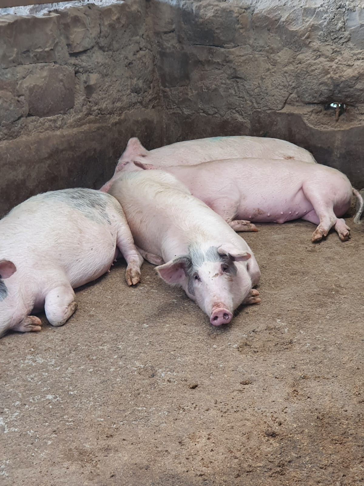

Welcome to Soul Garden Meats and More
Soul Garden Meats and more is a brand under Orbit Feeds Limited(OFL). Orbit Feeds Limited integrates breeding, rearing and sale of pregnant sows and baconers for revenue. In addition, we produce and sell high quality animal feeds to dairy, poultry, and pig farmers under the brand name Orbit Feeds Limited.
Contact us
For inquiries, orders, or more information about our products and services, please feel free to reach out to us through the following contact details:
- Phone: +254-700-433-407
- Office: Bibirioni, Limuru off Nairobi-Nakuru highway
- Email: orbitfeeds2019@gmail.com
About us
Our dream begun small we started out as a small scale piggery farm located in Limuru in the year 2018. We then slowly expanded our farm and officially began our journey in the meat industry in 2021. This was after establishing our own processing plant which now has the capacity to process over 2 tons of meat a day.
Our Vision
We strive to integrate the whole process of breeding, rearing and processing of livestock hence efficient meat operations. Furthermore, we also hope to empower the local communities and the wider livestock sector in our country. Lastly to ensure customer satisfaction.


Our Mission
To provide high quality meat products to our customers while ensuring the welfare of our animals and the sustainability of our farming practices.
Our Future
We are committed to continuous improvement and innovation in our products and processes. We plan to expand our product line and reach more customers while maintaining our commitment to quality and sustainability. We hope to be the leading provider of high-quality meat products in our region and beyond.
Our Products
We offer a wide range of products, including fresh cuts of pork, as well as specialty items like
sausages, bacon.
Among other product for more information reach out.

Our Animals
We take great care in raising our animals, ensuring they are healthy and well-cared for.
Our pigs are raised in a clean and comfortable environment, with access to fresh water and nutritious
feed we process ourselves.

As we strategically expand, we have started rearing other animals including various breeds of sheep and chicken. We are committed to ensure all our animals are of good health by having a round the clock veterinary care and regular health checks. Furthermore, we strive to ensure the emotional well-being of our animals by providing them with a comfortable and stimulating environment, as well as regular socialization and enrichment activities.
Our farm is located in Limuru and is open for visitation by appointment. We welcome you to come and see our animals and learn more about our farming practices.